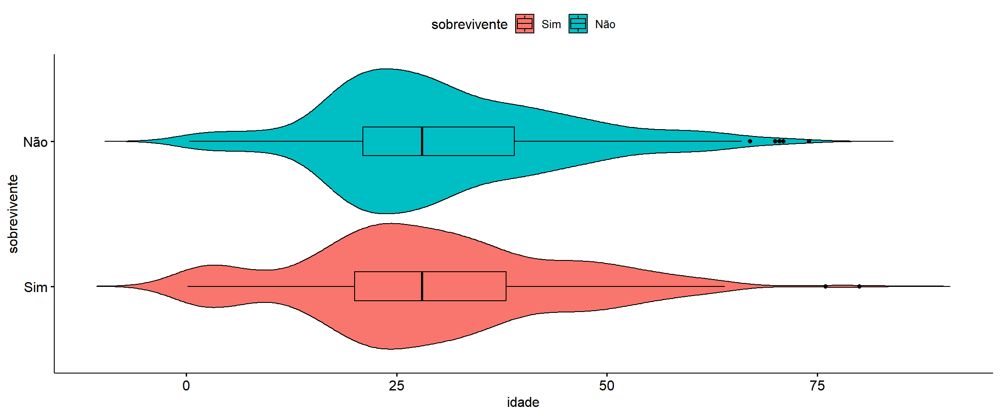

O objetivo desse trabalho foi aplicar o método de regressão logistica em um conjunto de dados contendo uma variável binária (Sobreivente | Não sobrevivente) e outras variáveis independentes (Sexo, Classe e Idade).
SETUP
Código
# Pacotes ----------------------------------library(tidyverse) # manipulação dos dados e ggplot2library(ggpubr) # gráficos library(flextable) # tabelaslibrary(gtsummary) # tabelaslibrary(patchwork) # gráficoslibrary(broom) # # Configurações ----------------------------theme_set(theme_test()) gtsummary::theme_gtsummary_language("pt")
IMPORTAÇÃO DOS DADOS
Após a importação dos dados as variáveis qualitativas foram recategorizadas, adicionando seus respectivies níveis.
Código
dados <-read.csv("dados.csv", sep ='\t') %>%mutate(sobrevivente =factor(ifelse(sobrevivente ==0, "Não", "Sim"),levels =c("Sim", "Não")), # ordem dos níveissexo =factor(ifelse(sexo ==0, "Feminino", "Masculino"),levels =c("Feminino","Masculino")), # ordem dos níveisclasse =factor(case_when( classe ==1~"Alta", classe ==2~"Média", classe ==3~"Baixa",),levels =c("Alta", "Média", "Baixa")) # ordem dos níveis )
A variavel dependente será Sobrevivente tendo como nível de refererência o Sim. Portanto o modelo será ajustado para estimar razão de chances de Sobrevivência Não / Sobrevivencia Sim.
ANÁLISE DESCRITIVA
Código
plot_sobrevivente <- dados %>%count(sobrevivente) %>%mutate(lab =paste0(n,' (', round(prop.table(n)*100, 2), '%)')) %>%ggplot(aes(x = sobrevivente, y = n, label = lab)) +geom_col(fill ='darkgreen', alpha =0.6) +geom_text(vjust =-0.5, size =3) +labs(y ='Frequência')plot_sexo <- dados %>%count(sexo) %>%mutate(lab =paste0(n,' (', round(prop.table(n)*100, 2), '%)')) %>%ggplot(aes(x = sexo, y = n, label = lab)) +geom_col(fill ='darkgreen', alpha =0.6) +geom_text(vjust =-0.5, size =3) +labs(y ='Frequência')plot_classe <- dados %>%count(classe) %>%mutate(lab =paste0(n,' (', round(prop.table(n)*100, 2), '%)')) %>%ggplot(aes(x = classe, y = n, label = lab)) +geom_col(fill ='darkgreen', alpha =0.6) +geom_text(vjust =-0.5, size =3) +labs(y ='Frequência')plot_sobrevivente + plot_sexo + plot_classe
count(dados, classe, sobrevivente) %>%ggbarplot(y ="n", x ="classe", fill ="sobrevivente", position =position_fill(), label =TRUE, lab.pos ="in", lab.hjust =1.6,orientation ="horizontal")
Código
ggviolin( dados,x ="sobrevivente", y ="idade", orientation ="horizontal", fill ="sobrevivente", add ="boxplot" )

MODELAGEM
Ajustes de diferentes modelos
Modelo completo e modelo escolhido pelo método stepwise
Código
# Modelo com todas as variáveis modelo_completo <-glm(data = dados, formula = sobrevivente ~ ., family =binomial() )# Modelo stepwise modelo_step <- modelo_completo %>%step()
Start: AIC=992.45
sobrevivente ~ sexo + idade + classe
Df Deviance AIC
<none> 982.45 992.45
- idade 1 1013.80 1021.80
- classe 2 1101.34 1107.34
- sexo 1 1255.69 1263.69
1OR = Razão de chances, SE = Erro padrão, IC = Intervalo de confiança
Individuos do sexo Masculino possuem uma chance 12 vezes maior de pertencerem ao grupo de não sobrevivente quando comparado com os do sexo Feminino.
Idade está pouco relacionada a pertença de um ou outro grupo, com uma leve tendencia a estar relacionada com a pertença ao grupo de não sobrevivente.
Individuos de classe Média ou Baixa estão mais relacionadas a pertença do grupo de não sobreiventes quando comparadas com a classe Alta. a chance é 3,6 vezes maior nos de classe Média e quase 10 vezes maior nos de classe baixa quando comparados com a Classe Alta.
R Core Team (2023). R: A Language and Environment for Statistical Computing. R Foundation for Statistical Computing, Vienna, Austria. https://www.R-project.org/.
Sjoberg DD, Whiting K, Curry M, Lavery JA, Larmarange J. Reproducible summary tables with the gtsummary package. The R Journal 2021;13:570–80. https://doi.org/10.32614/RJ-2021-053.
Lüdecke et al., (2021). performance: An R Package for Assessment, Comparison and Testing of Statistical Models. Journal of Open Source Software, 6(60), 3139. https://doi.org/10.21105/joss.03139
Wickham H, Averick M, Bryan J, Chang W, McGowan LD, François R, Grolemund G, Hayes A, Henry L, Hester J, Kuhn M, Pedersen TL, Miller E, Bache SM, Müller K, Ooms J, Robinson D, Seidel DP, Spinu V, Takahashi K, Vaughan D, Wilke C, Woo K, Yutani H (2019). “Welcome to the tidyverse.” Journal of Open Source Software, 4(43), 1686. doi:10.21105/joss.01686 https://doi.org/10.21105/joss.01686.
---title: "Atividade Regressão Logistica"author: Enoque Filhodate: 2024-07-14editor: visualfontsize: 12ptformat: html: theme: litera toc: true code-link: true code-fold: show code-tools: true #code-block-bg: "lightblue" #code-block-border-left: "#31BAE9"execute: warning: false message: falselang: pt-brdpi: 300fig-width: 12fig-align: centercategories: [R, Análise Descritiva, Regressão Logistica, GLM]---O objetivo desse trabalho foi aplicar o método de regressão logistica em um conjunto de dados contendo uma variável binária (Sobreivente \| Não sobrevivente) e outras variáveis independentes (Sexo, Classe e Idade).## SETUP```{r}# Pacotes ----------------------------------library(tidyverse) # manipulação dos dados e ggplot2library(ggpubr) # gráficos library(flextable) # tabelaslibrary(gtsummary) # tabelaslibrary(patchwork) # gráficoslibrary(broom) # # Configurações ----------------------------theme_set(theme_test()) gtsummary::theme_gtsummary_language("pt")```## IMPORTAÇÃO DOS DADOSApós a importação dos dados as variáveis qualitativas foram recategorizadas, adicionando seus respectivies níveis.```{r}dados <-read.csv("dados.csv", sep ='\t') %>%mutate(sobrevivente =factor(ifelse(sobrevivente ==0, "Não", "Sim"),levels =c("Sim", "Não")), # ordem dos níveissexo =factor(ifelse(sexo ==0, "Feminino", "Masculino"),levels =c("Feminino","Masculino")), # ordem dos níveisclasse =factor(case_when( classe ==1~"Alta", classe ==2~"Média", classe ==3~"Baixa",),levels =c("Alta", "Média", "Baixa")) # ordem dos níveis )```A variavel dependente será **`Sobrevivente`** tendo como nível de refererência o **Sim**. Portanto o modelo será ajustado para estimar razão de chances de **Sobrevivência Não / Sobrevivencia Sim**.## ANÁLISE DESCRITIVA```{r}#| fig-width: 8#| fig-height: 3.5plot_sobrevivente <- dados %>%count(sobrevivente) %>%mutate(lab =paste0(n,' (', round(prop.table(n)*100, 2), '%)')) %>%ggplot(aes(x = sobrevivente, y = n, label = lab)) +geom_col(fill ='darkgreen', alpha =0.6) +geom_text(vjust =-0.5, size =3) +labs(y ='Frequência')plot_sexo <- dados %>%count(sexo) %>%mutate(lab =paste0(n,' (', round(prop.table(n)*100, 2), '%)')) %>%ggplot(aes(x = sexo, y = n, label = lab)) +geom_col(fill ='darkgreen', alpha =0.6) +geom_text(vjust =-0.5, size =3) +labs(y ='Frequência')plot_classe <- dados %>%count(classe) %>%mutate(lab =paste0(n,' (', round(prop.table(n)*100, 2), '%)')) %>%ggplot(aes(x = classe, y = n, label = lab)) +geom_col(fill ='darkgreen', alpha =0.6) +geom_text(vjust =-0.5, size =3) +labs(y ='Frequência')plot_sobrevivente + plot_sexo + plot_classe``````{r}#| fig-width: 6#| fig-height: 3.5#| dpi: 300 p1 <-ggplot(dados, aes(y ='', x = idade)) +geom_boxplot(fill ="gray70", alpha =0.5) +theme(axis.ticks.x =element_blank(),axis.text.y =element_blank(),axis.ticks.y =element_blank(),axis.text =element_blank(),axis.title.x =element_blank() ) +labs(y ='') p2 <-ggplot(dados, aes(x = idade, after_stat(density))) +geom_histogram(color ="white", fill ="gray70", bins =30, alpha =0.5) +geom_density(color ="black", linewidth =0.5) +geom_vline(aes(xintercept =mean( idade, na.rm =TRUE)),linetype ='dashed', color ='red', linewidth =0.8) +labs(y ='Densidade') (p1 / p2) +plot_layout(heights =c(1,5)) &scale_x_continuous(limits =c(min(pull(dados, idade), na.rm =TRUE) -3,max(pull(dados, idade), na.rm =TRUE) +3) )``````{r}#| include: false#| fig-width: 10#| fig-height: 5dados %>%mutate(sexo_sobrevivivente =paste0(sexo, " ", sobrevivente),classe_sobrevivente =paste0(classe, " ", sobrevivente) ) %>%select(sexo_sobrevivivente, classe_sobrevivente) %>%pivot_longer(everything()) %>%count(name, value) %>%mutate(lab =paste0(n,' (', round(prop.table(n)*100, 2), '%)'), .by = name) %>%ggplot(aes(x = value, y = n, label = lab)) +geom_col(fill ='darkgreen', alpha =0.6) +geom_text(vjust =-0.5, size =3) +labs(y ='Frequência') +facet_wrap(~name, scales ="free")``````{r}dados %>% gtsummary::tbl_cross( sexo, sobrevivente, statistic ="{n} ({p}%)",percent ="col" ) %>%bold_labels() %>%as_flex_table()``````{r}count(dados, sexo, sobrevivente) %>%ggbarplot(y ="n", x ="sexo", fill ="sobrevivente", position =position_fill(), label =TRUE, lab.pos ="in", orientation ="horizontal", lab.hjust =1.6)``````{r}dados %>% gtsummary::tbl_cross( classe, sobrevivente, statistic ="{n} ({p}%)",percent ="col" ) %>%bold_labels() %>%as_flex_table()``````{r}count(dados, classe, sobrevivente) %>%ggbarplot(y ="n", x ="classe", fill ="sobrevivente", position =position_fill(), label =TRUE, lab.pos ="in", lab.hjust =1.6,orientation ="horizontal")``````{r}ggviolin( dados,x ="sobrevivente", y ="idade", orientation ="horizontal", fill ="sobrevivente", add ="boxplot" )```## MODELAGEM### Ajustes de diferentes modelosModelo completo e modelo escolhido pelo método stepwise```{r}# Modelo com todas as variáveis modelo_completo <-glm(data = dados, formula = sobrevivente ~ ., family =binomial() )# Modelo stepwise modelo_step <- modelo_completo %>%step()```### Critério para selecionar o melhor modelo.O método stepwise apontou para o modelo completo.```{r}list(modelo_completo, modelo_step) %>%map(.f =function(x){ broom::glance(x) %>%select(AIC, BIC, Deviance = deviance) }) %>%bind_rows() %>%mutate(.before =1, Modelo =c("modelo_completo","modelo_step")) %>%arrange(AIC) %>%flextable() %>%bold(i =1, part ="header") %>%autofit()```## DIAGNÓSTICO DO MODELO```{r}tabela_modelo =tbl_regression(modelo_completo, exponentiate =TRUE) %>%add_glance_table(include =c(AIC, BIC, deviance)) %>%modify_column_unhide(column = std.error) %>%bold_labels() %>%as_flex_table()tabela_modelo```------------------------------------------------------------------------#### Análise de Deviance```{r}anova(modelo_completo, test ="Chisq") %>%tidy() %>%mutate(p.value = scales::pvalue(p.value)) %>%flextable() %>%bold(part ="header") %>%colformat_double(j =3:5, digits =3)```### Análise de ResiduosPacote `performance`#### Autocorrelação```{r}modelo_completo %>% performance::check_autocorrelation()```#### Outliers```{r}modelo_completo %>% performance::check_outliers()```#### Multicolinearidade```{r}modelo_completo %>% performance::check_collinearity()```#### Teste de resíduos```{r}# Resíduos de Pearsontibble(Pearson =residuals(modelo_completo, type ="pearson"),Deviance =residuals(modelo_completo, type ="deviance"),) %>%pivot_longer(everything(), names_to ="Residuo") %>%summarise(SQR =sum(value^2), .by = Residuo) %>%mutate(Pchisq =pchisq(SQR, df = modelo_completo$df.residual, lower.tail = F)) %>%flextable() %>%autofit() %>%bold(part ="header")```#### Acurácia```{r}modelo_completo %>% performance::performance_accuracy()```#### Porcentagem de predições corretas```{r}modelo_completo %>% performance::performance_pcp()``````{r}#| include: FALSEmodelo_completo %>% performance::performance_roc() %>%plot()``````{r}#| include: FALSEmodelo_completo %>% performance::performance_roc()```#### Curva ROC```{r}Epi::ROC(form=dados$sobrevivente~ dados$sexo + dados$idade + dados$classe, plot="ROC",MI=F)```### Poder preditivo do modelo.#### Sensibilidade e Especificidade```{r}modelo_completo %>%augment(type.predict ="response") %>%mutate(Predito =factor(ifelse(.fitted <=0.63, "Sim", "Não"), levels =c("Sim","Não")) ) %>%tbl_cross(row = sobrevivente, col = Predito, percent ="row") %>%bold_labels() %>%as_flex_table()```- Sensibilidade: 76% (Verdadeiro positivo)- Especificidade: 80% (Verdadeiro negativo)#### Poder de previsão```{r}modelo_completo %>%augment(type.predict ="response") %>%mutate(Predito =factor(ifelse(.fitted <=0.63, "Sim", "Não"), levels =c("Sim", "Não"))) %>%tbl_cross(row = sobrevivente, col = Predito, percent ="col") %>%bold_labels() %>%as_flex_table()```- Poder de previsão de não sobrevivente: 84%- Poder de previsão sobrevivente: 70%## INTERPRETAÇÃO DOS RESULTADOS```{r}tabela_modelo```- Individuos do sexo Masculino possuem uma chance 12 vezes maior de pertencerem ao grupo de não sobrevivente quando comparado com os do sexo Feminino.- Idade está pouco relacionada a pertença de um ou outro grupo, com uma leve tendencia a estar relacionada com a pertença ao grupo de não sobrevivente.- Individuos de classe Média ou Baixa estão mais relacionadas a pertença do grupo de não sobreiventes quando comparadas com a classe Alta. a chance é 3,6 vezes maior nos de classe Média e quase 10 vezes maior nos de classe baixa quando comparados com a Classe Alta.## REFERÊNCIAS- Cientística & Podcast Naruhodo: *Estatística Psicobio I 2022 #30* <https://www.youtube.com/live/yr657G1N7GQ?si=GSnCydg1S17aDx-V>- Cientística & Podcast Naruhodo: *Estatística Psicobio I 2022 #31* <https://www.youtube.com/live/lCLEaVOvo-c?si=JG0NSbI3YoEh4W3R>- Cientística & Podcast Naruhodo: *Estatística Psicobio I 2022 #32* <https://www.youtube.com/live/lCLEaVOvo-c?si=iMqFh39XcGo5R0kt>- R Core Team (2023). *R: A Language and Environment for Statistical Computing*. R Foundation for Statistical Computing, Vienna, Austria. <https://www.R-project.org/>.- Sjoberg DD, Whiting K, Curry M, Lavery JA, Larmarange J. Reproducible summary tables with the gtsummary package. The R Journal 2021;13:570–80. https://doi.org/10.32614/RJ-2021-053.- Kassambara A (2023). *ggpubr: 'ggplot2' Based Publication Ready Plots*. R package version 0.6.0, <https://CRAN.R-project.org/package=ggpubr>.- Lüdecke et al., (2021). performance: An R Package for Assessment, Comparison and Testing of Statistical Models. Journal of Open Source Software, 6(60), 3139. https://doi.org/10.21105/joss.03139- Wickham H, Averick M, Bryan J, Chang W, McGowan LD, François R, Grolemund G, Hayes A, Henry L, Hester J, Kuhn M, Pedersen TL, Miller E, Bache SM, Müller K, Ooms J, Robinson D, Seidel DP, Spinu V, Takahashi K, Vaughan D, Wilke C, Woo K, Yutani H (2019). “Welcome to the tidyverse.” *Journal of Open Source Software*, *4*(43), 1686. doi:10.21105/joss.01686 <https://doi.org/10.21105/joss.01686>.- Pedersen T (2024). *patchwork: The Composer of Plots*. R package version 1.2.0, <https://CRAN.R-project.org/package=patchwork>.- Gohel D, Skintzos P (2023). *flextable: Functions for Tabular Reporting*. R package version 0.9.4, <https://CRAN.R-project.org/package=flextable>.